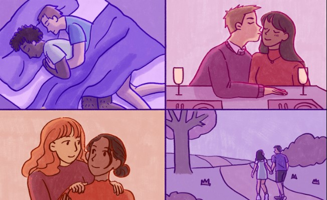
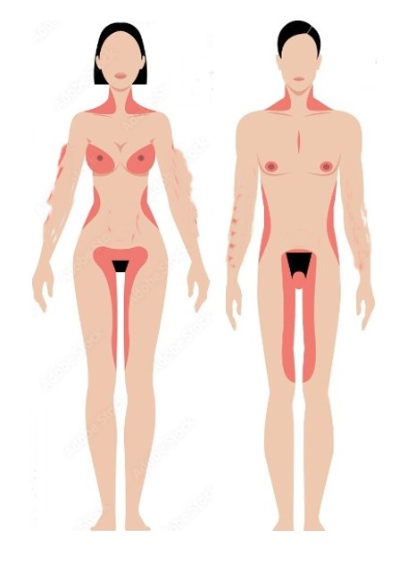
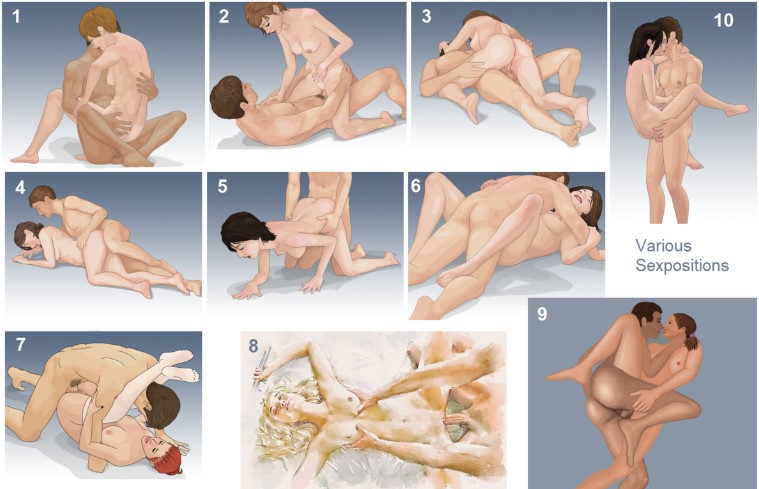

Sex Guide
Explore thoughtful ways to enhance your connection with your partner.
1. Relax
Take a moment to unwind and let go of any stress. Relaxing helps you be fully present, allowing both you and your partner to connect on a deeper level.
2. Make Time for Foreplay
Slow down and enjoy the moments before intimacy. Experiment with gentle touches or messages throughout the day to build anticipation. Just ensure consent before sharing any intimate texts or photos.
Read More3. Be Physically Affectionate
Deepen your connection by showing affection through kisses, cuddles, and soft caresses. These gestures can make both of you feel cherished and loved.
 Read More4. Focus on Key Areas for Kissing
Gently kiss sensitive spots like the lips, neck, chest, and lower abdomen. These areas are often more sensitive, creating a more intense connection.
5. Try Different Positions
Experiment with different positions to find what feels best for both of you. New positions can stimulate different areas, making each experience unique. Don’t be afraid to ask your partner to try new things.
 Read More6. Practice Touching
Guide your partner on how you like to be touched, and ask them to do the same. Exploring mutual preferences can enhance intimacy and add excitement to your experience.
Read More7. Engage in Your Fantasies
Discuss fantasies and try things like role-playing to spice up your connection. Always ensure mutual consent and choose a safe word to ensure comfort and boundaries are respected.
8. Try a New Location
A small change in location can add excitement. Explore new areas in your home or plan a romantic getaway for a refreshing experience.
9. Try Natural Aphrodisiacs
Foods like strawberries, oysters, and avocado can boost libido due to their nutrient content. Avoid excessive alcohol, as it can lower libido over time.
10. Exercise Regularly
Physical fitness can improve stamina and confidence. Regular exercise can also increase arousal in women and prevent erectile issues in men.
 Watch Videos
Watch Videos
11. Practice Mindfulness
Staying present enhances your experience. Try syncing your breath with your partner's, engaging all your senses, and creating a peaceful, sensory-rich environment.
Read More